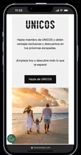
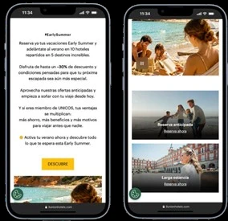

Mobile
1 · Oferta con botón «Reserva»Offer with “Book” button2 · Bloque ÚNICOS · 10% dtoÚNICOS block · 10% off3 · Buscador fijo abajoSearch pinned to the bottom
Sistema de diseño desde cero: 80+ componentes, arquitectura de tokens y accesibilidad WCAG AA.
Design system from scratch: 80+ components, token architecture and WCAG AA accessibility.
CRO del canal directo: experimento en el motor y re-componetización de la home. Conversión del 3,36% al 6,5%.
Direct-channel CRO: a booking engine experiment and a homepage recomposition. Conversion from 3.36% to 6.5%.
Ecosistema digital 360° e identidad visual para delivery y mesas: incremento del 28% en pedidos.
360° digital ecosystem and brand identity for dine-in & delivery: +28% direct orders uplift.
Diagnóstico estratégico Build vs. Buy: contextual discovery y propuesta de herramienta interna.
Build vs. Buy strategic diagnosis: embedded contextual discovery and internal tooling proposal.
UX Research y diseño de hábitos deportivos: transformando una app de reservas en adherencia.
UX Research & habit-forming design: turning a booking app into long-term fitness adherence.
De 3,36% a 6,5% de conversión reordenando los componentes de la home según lo que hacían los socios ÚNICOS.From 3.36% to 6.5% conversion by reordering the homepage components around what ÚNICOS members did.


La home se había montado como escaparate de marca. El usuario quería comprobar disponibilidad cuanto antes.The homepage had been built as a brand showcase. Users wanted to check availability as fast as possible.
La IA aceleró el análisis. La lectura de los patrones y las decisiones fueron mías.AI sped up the analysis. Reading the patterns and making the calls was my job.
“Si tengo que buscar dónde se reserva, me voy a Booking.”“If I have to hunt for where to book, I’ll go to Booking.”
Antes de tocar la home, probé a rediseñar el motor de reservas para derivar tráfico entre los hoteles de la cadena.Before touching the homepage, I tested a redesigned booking engine to steer traffic across the chain’s hotels.


Mismos componentes de AEM y misma identidad. Cambia el orden: primero reservar, después inspirar.Same AEM components, same identity. The order changes: book first, get inspired after.
El wireframe fijó la secuencia de componentes en AEM. Producción respetó ese orden.The wireframe set the component sequence in AEM. Production kept that order.


El botón «Reservar» se queda fijo abajo, donde llega el pulgar. Desde cualquier oferta u hotel, un toque abre el motor.The “Book” button stays pinned at the bottom, within thumb reach. From any offer or hotel, one tap opens the engine.
de las conversiones tras el cambio fueron de socios ÚNICOS.of conversions after the change came from ÚNICOS members.

Con el 10% a la vista en mitad del recorrido, la ventaja ÚNICOS pasó a ser la razón para reservar en directo y no en Booking.With the 10% visible mid-flow, the ÚNICOS perk became the reason to book direct instead of on Booking.
Algunos datos redondeados por confidencialidad. Medición con Adobe Analytics y Microsoft Clarity.Some figures rounded for confidentiality. Measured with Adobe Analytics and Microsoft Clarity.
De 3,36% a 6,5% de conversión reordenando los componentes de la home según lo que hacían los socios ÚNICOS.From 3.36% to 6.5% conversion by reordering the homepage components around what ÚNICOS members did.

de conversión con el motor enterrado bajo promociones.conversion, with the booking engine buried under promotions.
Un selector de destino que derivó tráfico. Funcionó y se retiró.A destination selector that redirected traffic. It worked, then was retired.
Motor y ventaja de socio antes que el escaparate.Booking engine and member perk ahead of the showcase.
×1,9 la conversión · p < 0,05 · 50% de socios ÚNICOS×1.9 conversion · p < 0.05 · 50% from ÚNICOS members
La home se había montado como escaparate de marca. El usuario quería comprobar disponibilidad cuanto antes.The homepage had been built as a brand showcase. Users wanted to check availability as fast as possible.
La IA aceleró el análisis. La lectura de los patrones y las decisiones fueron mías.AI sped up the analysis. Reading the patterns and making the calls was my job.
Tráfico de Paid Media que llega con intención de reservar y sin tiempo para explorar.Paid Media traffic that arrives ready to book, with no time to browse.
“Si tengo que buscar dónde se reserva, me voy a Booking.”“If I have to hunt for where to book, I’ll go to Booking.”
Antes de tocar la home, probé a rediseñar el motor de reservas para derivar tráfico entre los hoteles de la cadena.Before touching the homepage, I tested a redesigned booking engine to steer traffic across the chain’s hotels.
3 patrones de fricción en el motor3 friction patterns in the engineMismos componentes de AEM y misma identidad. Cambia el orden: primero reservar, después inspirar.Same AEM components, same identity. The order changes: book first, get inspired after.
El botón «Reservar» se queda fijo abajo, donde llega el pulgar. Desde cualquier oferta u hotel, un toque abre el motor.The “Book” button stays pinned at the bottom, within thumb reach. From any offer or hotel, one tap opens the engine.
de las conversiones tras el cambio fueron de socios ÚNICOS.of conversions after the change came from ÚNICOS members.
Algunos datos redondeados por confidencialidad. Medición con Adobe Analytics y Microsoft Clarity.Some figures rounded for confidentiality. Measured with Adobe Analytics and Microsoft Clarity.
Cómo convertí 10.000+ logs y 250+ sesiones en hipótesis priorizadas, tests A/B y un canal directo que vende más. How I turned 10,000+ logs and 250+ sessions into prioritised hypotheses, A/B tests and a direct channel that sells more.

El acceso al motor competía con promociones, branding y contenido inspiracional.Engine access competed with promos, branding and inspirational content.
Hipótesis priorizadas con ICE y aplicación de la Ley de Fitts en los CTAs clave.ICE-prioritised hypotheses and Fitts's Law on key CTAs.
Conversión del funnel (desde 3,36%) · 13% de la venta · p < 0,05Funnel conversion (from 3.36%) · 13% of sales · p < 0.05
La experiencia se había construido con una lógica corporativa e inspiracional, pero la mayor parte del tráfico llegaba desde Paid Media con una intención claramente transaccional: el modelo mental del negocio y el del usuario no coincidían.The experience was built on a corporate, inspirational logic, while most Paid Media traffic arrived with clear transactional intent: a mismatch between the business's mental model and the user's.
Venía de proyectos en los que diseñaba y construía yo sola (Paolo). Aquí, por primera vez, el reto era demostrar con datos estadísticos que el diseño movía negocio, siendo la única diseñadora en un equipo backend.I came from projects where I designed and built solo (Paolo). Here, for the first time, the challenge was to prove with statistics that design moved the business, as the only designer in a backend team.
Tasa de conversión inicial del embudo con alta pérdida de usuariosBaseline funnel conversion rate with heavy drop-off
Motor de reservas enterrado bajo campañas y promocionesBooking engine buried beneath marketing banners and promos
Fricción severa y rage clicks en el selector de fechas táctil móvilSevere mobile touch friction and rage clicks on date picker
Ventajas del canal directo invisibles frente a Booking.comDirect channel benefits invisible compared to OTAs
El 75% del tráfico llegaba con intención transaccional directa pero se perdía en el scroll.75% of paid traffic had immediate booking intent but was lost in scroll fatigue.
Reubicar el motor en el primer scroll y anclar el CTA en la zona natural del pulgar.Elevate booking engine above the fold and anchor sticky mobile thumb-friendly CTA.
La mayoría llegaba a reservar, no a explorar.Most users came to book, not to browse.
El motor competía con promociones y módulos secundarios.The engine competed with promos and secondary modules.
Errores recurrentes en el selector de fechas táctil.Recurring errors in the touch date picker.
“El usuario no quería explorar primero. Quería comprobar la disponibilidad cuanto antes.”“Users didn't want to explore first. They wanted to check availability as soon as possible.”
Extraje y agrupé 10.000+ logs de conversión en 2 horas con Claude para aislar las fricciones antes de diseñar. La IA aceleró el análisis, pero el criterio fue mío.I extracted and clustered 10,000+ conversion logs in 2 hours with Claude to isolate friction before designing. AI sped up the analysis; the judgement was mine.
Viajera vacacional · Reserva desde el móvilLeisure traveller · Books on mobile
[persona ilustrativa]
“Si tengo que buscar dónde se reserva, me voy a Booking.”“If I have to hunt for where to book, I'll go to Booking.”
“Si llevamos el motor al primer scroll y reducimos la competencia visual, aumentará el inicio de búsquedas en el tráfico de alta intención.”“If we bring the engine above the fold and reduce visual competition, search starts from high-intent traffic will increase.”
| HipótesisHypothesis | Impact | Confidence | Ease | ICE |
|---|---|---|---|---|
| Motor en el primer scrollEngine above the fold | 9 | 8 | 7 | 8,0 |
| Ventaja de socio en la ofertaMember perk on offers | 8 | 7 | 8 | 7,7 |
| Selector de fechas con swipeSwipe date picker | 7 | 7 | 5 | 6,3 |
[puntuaciones de ejemplo: sustituir por las reales]


Motor enterrado bajo el hero y las promociones; baja interacción y fuga de reservas. Engine buried below hero and promos; low interaction and booking drop-off.

Motor en el 1er scroll con jerarquía optimizada para desktop y navegación móvil. Engine above the fold with optimized hierarchy for desktop and mobile browsing.


Aplicación de la Ley de Fitts: CTA persistente en zona del pulgarFitts's Law applied: sticky CTA in thumb reach zone
Objetivo grande y siempre al alcance del pulgar.Large target, always within thumb reach.
Promociones desplazadas por debajo del motor.Promos moved below the engine.
Fechas, huéspedes y CTA en un único bloque.Dates, guests and CTA in a single block.
Conversión del funnelFunnel conversion
p < 0,05
Conversión del funnelFunnel conversion
De la venta total representadaShare of total sales
Conversiones de socios ÚNICOSConversions from ÚNICOS members
Motor en el primer scrollEngine above the fold
Algunos datos se han redondeado por confidencialidad. El seguimiento se hizo con Adobe Analytics y Microsoft Clarity.Some figures are rounded for confidentiality. Tracking via Adobe Analytics and Microsoft Clarity.
Inicios de búsquedaSearch start uplift
De la venta directaOf total direct sales
Significancia estadísticaStatistical significance
El conflicto entre branding y conversión es de priorización, no de diseñoBrand vs conversion conflicts are about prioritization, not aesthetics
Las restricciones técnicas de AEM guiaron la solución estructuralAEM technical constraints directly guided the structural solution
Hablar en lenguaje de negocio y ROAS es lo que aprueba propuestasSpeaking the language of business metrics and ROAS gets designs approved

Clarity reveló que se usaba el buscador para explorar destinos. Eso abrió una nueva línea estratégica.Clarity showed people used search to explore destinations, which opened a new strategic line.
Presentar con significancia estadística cambió cómo se escuchaba el diseño en la empresa.Presenting with statistical significance changed how design was heard at the company.
Validar antes el selector móvil con tests de usabilidad moderados.Validate the mobile picker earlier with moderated usability tests.
Cada caso de mi portfolio representa un salto de madurez: de la investigación cualitativa inicial al diseño que mueve métricas de negocio y la creación de sistemas a escala. Each case in my portfolio marks a leap in maturity: from early user research to business metrics and scalable design systems.
UX Research cualitativo & hábitosQualitative UX Research & habits
Ver casoView caseDiseño integral & desarrollo webEnd-to-end design & code
Ver casoView caseDiseño que mueve métricas & A/B testingData-driven CRO & A/B testing
Proyecto actualCurrent projectPensamiento sistémico & WCAG AADesign systems & WCAG AA
Ver casoView case